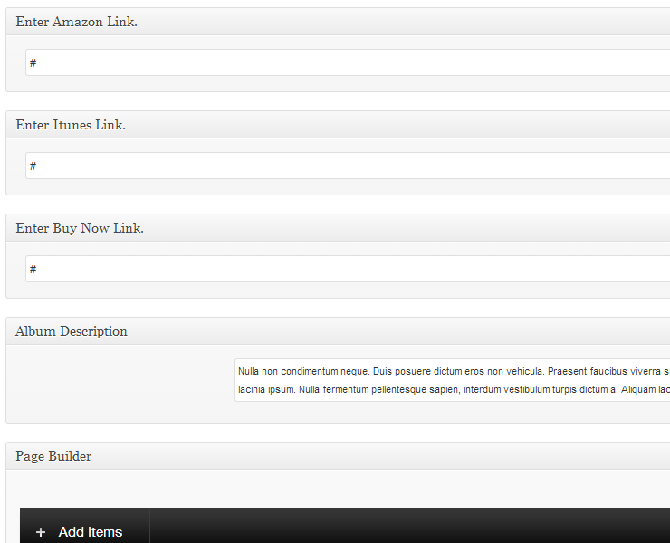
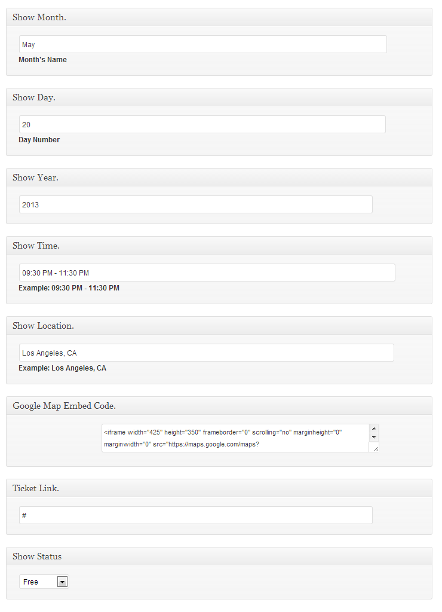

Created: 5/21/2013
By: Skyali
Contact: http://themeforest.net/user/Skyali
Thank you for purchasing my theme. If you have any questions that are beyond the scope of this help file, please feel free to email via my user page contact form here. Thanks so much!
Extract the files from the zip folder. There should be a folder called "Vibration" upload this to your themes folder via FTP. The next step is to activate the theme. You will login into your admin panel. Appearance » Themes » Vibration click the activate link.
If you need help selecting a ftp. I use FileZilla.
Note: If your slider is not working or anything else that's controlled by jquery you may have installed the theme wrong. Make sure to only upload the the file titled "vibration.zip" or the folder "vibration" This is not the file you downloaded from themeforest instead it's located inside the file you downloaded from themeforest the file's are "vibration.zip" or "vibration" folder. Upload "vibration.zip" if your using wordpress's upload theme form if your uploading via ftp upload the folder "londonpress".
If your previous theme used the featured image function you can regenerate the images using the Regenerate Thumbnails Plugin. If your installing on a clean install with no images there is no need to use this plugin. It's simply to re-create the sizes of the images to fit the containers of the theme instead of cropping.
To setup your site like the demo you'll need to locate the xml file in the vibration folder. Once you've located this file follow the steps below.
Creating a post with a image. To create a post with a image you will first start by clicking add new post. Once you've landed on the post page next you'll create a featured image. You can find it located on the right side of your post page.
Creating a post for your albums is just as simple as creating a post for your blog but a little different. First you'll click "Albums" from the left side menu. Then click Add New. There are 4 fields in the albums post page.
Amazon Link - Add a link to the album's amazon page
Itunes Link - Add a link to the album's itunes page
Buy Now Link - Add a link to the albums custom buy page, e.g. woocommerce item page etc...
Album Description - This is the area for your albums description.
This is just example's of how I used the custom meta fields.
Creating a post for your shows is just as simple as creating a post for your blog but a little different. First you'll click "Shows" from the left side menu. Then click Add New. There are 8 fields in the shows post page.
Show Month - Enter the month for the show here example:April
Show Day - Enter the day of the show here example: Monday
Show Year - Enter the year for the show here example:2013
Show Time - Enter the time of the show here example:09:30 PM - 11:30 PM
Show Location - Enter the location for the show here example:Los Angeles, CA
Google Map Embed Code - Insert your google embed code for the location here.
Ticket Link - Add a link for the ticket's purchase e.g. woocommerce, buying tickets website etc...
Show Status - The status of the show the default link will print "Book Show", Choose from Canceled, Free OR Soldout.
This is just example's of how I used the custom meta fields.
If you'd like to feature a gallery sorted by certain categories set your categories here. After you can input the categories into the page builder's settings for the gallery page your creating.
If you'd like to feature a videos page sorted by certain categories set your categories here. After you can input the categories into the page builder's settings for the videos page your creating.
There are 8 custom widgets
Display as many as flickr photo's as you'd like with this widget.
Link to your social networks. If empty the icon will not show.
Audio Player for your widget areas.
This widget will display latest posts. The default listing number is 5. You may change this number to anything you'd like you can also select certain categories to display.
This widget will display latest shows. The default listing number is 5. You may change this number to anything you'd like you can also select certain categories to display.
This widget will display latest albums. The default listing number is 5. You may change this number to anything you'd like you can also select certain categories to display.
This widget will display latest photos. The default listing number is 5. You may change this number to anything you'd like you can also select certain categories to display.
This widget will display latest videos. The default listing number is 5. You may change this number to anything you'd like you can also select certain categories to display.
There are 7 widget areas to display your widgets more information below.
This widget displays all widgets in the sidebar.
This widget area is located at the very bottom of the page "The Footer" it displays on the very left end.
This widget is the second column located on the right of the first footer widget.
This widget is located on the right of the second footer widget.
This widget is located on the right of the second footer widget.
This widget is located on the left of the dual sidebar page template.
This widget is located on the right of the dual sidebar page template.
There are 6 Custom Fields on the page editor.
Select a custom background for this indivual page.
Input a background image.
Select wether you want the background to repeat or not.
Overide the page title with a custom page heading.
Select the style of the slider you'd like to display.
Create your custom sidebars and assign them here.
There are 11 custom shortcodes
[one_half]Your content goes here.[/one_half]
[one_third]Your content goes here.[/one_third]
[one_fourth]Your content goes here.[/one_fourth]
[two_thirds]Your content goes here.[/two_thirds]
[three_fourths]Your content goes here.[/three_fourths]
[button link="URL-HERE"background="ababab" size="20" link_color="ffffff"]Custom Button[/button]
[slideshow][slideshow_item url="IMG-URL"][/slideshow_item][slideshow_item url="IMG-URL"][/slideshow_item][slideshow_item url="IMG-URL"][/slideshow_item][/slideshow]
[accordions][accordion_item title="Accordion Item Title"]Some content for your accordion.[/accordion_item][/accordions]
[accordion_item title="Accordion Item Title"]Some content for your accordion.[/accordion_item]
[toggles][toggle_item title="Toggle Item Title"]Some content for your toggle.[/toggle_item][/toggles]
[toggle_item title="Toggle Item Title"]Some content for your toggle.[/toggle_item]
To access the theme options panel look for the option on the left that says "Vibration Options". Once your on the theme options landing page. Select any page that you'd like to edit threw the options. Here are a couple of tips to get the most out of the options panel.
General - This is where all of your general settings are located, logo, top header, footer, top menu, responsive
Styling - This is where all of your homepage settings are located, theme styling, font, custom css
Post Page - This is where all of your post page settings are located
Miscellaneous - This is where all of your miscellaneous settings are located, contact email, tracking code, translation, custom sidebars, social icons
The page builder comes with 19 elements to choose from.
Latest Posts This is where you can display your latest post's with the featured image on the left.
Latest Posts Style 2 This is where you can display your latest post's style 2 with the content on the bottom.
Latest Posts Style 3 This is where you can display your latest post's style 3 with the featured image on the right.
Latest Albums Display the latest albums with several options to customize.
Latest Shows Display the latest shows with with the content on the right and several options to customize.
Latest Shows Style 2 Display the latest shows second style with the content at the bottom with several options to customize.
Latest Photos Display the latest photos with several options to customize.
Latest Videos Display the latest videos with several options to customize.
Audio Player A quick mp3 player for your pages
Event Countdown Countdown to any event with this tab.
Audio Playlist Create your playlist with this tab limit of 30 songs
Contact Form Create a contact form any page with this tab.
Accordion Access to the accordion shortcode for easy access.
Toggle Access to the toggle shortcode for easy access.
Video You can embed your videos with this tab.
Slideshow Easy upload for your slideshows here.
Tabs Create quick tabs for your page.
Short Codes Display your shortcodes with this tab.
Image Upload quick images with this tab.
Vibration uses a total of 3 css files.
style.css Main css file, controls the whole theme structure.
scripts/css/bright-template.css Dark theme skin.
scripts/css/responsive.css Repsonsive css file.
My slider doesn't work. - A lot of users just upload the complete zip file they downloaded from ThemeForest. But the actual way to upload is to open the zip file you downloaded from ThemeForest. And only upload the zip file "Vibration.zip" or upload the "Vibration" folder found inside the file you downloaded from ThemeForest. Do not upload all the contents of the zip file you downloaded from themeforest this will only result in javascript errors. If this does not work for you. Then it's a plugin causing the problems you'll have to disable each plugin and re-activate one by one to see which one is causing the problems.
There is two main psd files with all of the elements to change the template.
Once again, thank you so much for purchasing this theme. As I said at the beginning, I'd be glad to help you if you have any questions relating to this theme. No guarantees, but I'll do my best to assist. If you have a more general question relating to the themes on ThemeForest, you might consider visiting the forums and asking your question in the "Item Discussion" section.
Skyali